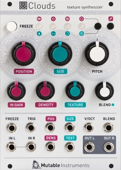

Key data
Texture synthesizer
| Parameter | Value |
|---|---|
| Width | 18HP |
| Depth | 25mm |
| +12V current | 120mA |
| -12V current | 10mA |
| Lifetime | 01/15 to 10/17 |
| Modulargrid | Link |
| Processor | STM32F405RGT6 |
| Codec | WM8731 |
Original printed manual
Features
Audio buffer acquisition
- Stereo I/O. Even with a mono recording buffer, a wide stereo output can still be simulated by randomly panning grains or through the stereo reverberator.
- Stereo pre-amp with a gain range covering modular and line levels.
- Recording buffer size: 1s (32kHz, stereo) to 8s (16kHz, µ-law, mono).
- The FREEZE button and the corresponding gate input freezes the content of the recording buffer, allowing you to dive into its sonic details.
- 4 memory slots for storing and recalling buffers.
Granular synthesis
- Grain generation time base: periodical, randomized, or externally clocked.
- The POSITION knob selects from which part of the recording buffer the grains are extracted.
- Grain size from 16ms to 1s.
- Up to 40 to 60 concurrent grains (depending on recording buffer resolution).
- Transposition from -2 octaves to +2 octaves, with V/O tracking.
- Grain envelope continuously variable between boxcar, triangle and Hann functions.
- CV inputs for all grain parameters, individually sampled and held by each grain. For stochastic, Xenakis-style explorations, try feeding random voltages to those!
- Diffusion network with 4 All-pass filters to post process the granularized signals.
Post-processing ("blending") settings
4 post-processing parameters are controlled by the BLEND knob and CV input:
- Dry/wet balance.
- Random panning amount.
- Feedback amount.
- Reverb amount.
Specifications
- Input impedances: 100k.
- Audio input gain range: line level to modular level.
- CV range: +/- 5V. CVs outside of this range are simply clipped.
- Internal processing: 32kHz, 32-bit floating point. RAM Recording buffer uses 16-bit (high quality) or 8-bit µ-law (low quality) resolution.